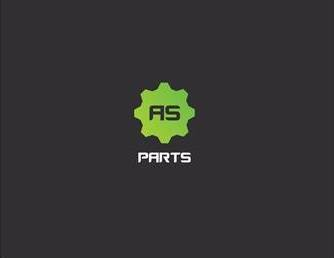

Pracovní zkušenosti
- TCS Česká republika s.r.o. www.tcs-czech.cz
- komunikace se zákazníky, řešení jejich požadavků
- komunikace s dodavateli - tuzemskými i zahraničními
- kontrola a řízení jednotlivých projektů - od objednání stroje, logistiku, zpracování příslušných dokumentů až po fakturaci
- fakturace za jednotlivé úkony - prodej, servis, pronájem
- zodpovědnost za správný tok zboží - od příjmu po fakturaci
- spolupráce s obchodními zástupci - řešení jejich požadavků, se servisním a účetním oddělením
- práce s daty - příprava reportů, přehledů prodejů a podkladů pro inventuru, měsíční a roční uzávěrky
- správa pohledávek
- práce s účetním systémem Money S4, kontrola cen, práce s ceníky, zavádění a nastavování nových procesů
- Espresso Professional s.r.o. www.espressoprofessional.cz/
- komunikace se zákazníky, řešení jejich požadavků
- komunikace s dodavateli - tuzemskými i zahraničními
- zodpovědnost za správný tok zboží - od příjmu po fakturaci
- vyřizování reklamací, příjem kávovarů na servis
- práce s účetním systémem Money S4, EDI komunikace, podklady pro Intrastat
- práce s daty - příprava reportů, přehledů prodejů a podkladů pro inventuru, měsíční a roční uzávěrky
- evidence zaměstnanců - dovolené, nemocenské, CSS karty, občasné překlady návodů
- Automotive Service Parts s.r.o. 
- komunikace se zákazníky na call centru,řešení jejich požadavků
- komunikace s dodavateli - tuzemskými i zahraničními
- zodpovědnost za správný tok zboží - od příjmu po fakturaci
- práce s ERP systémem Nextis-objednávání dílů, fakturace, EDI komunikace
- vyřizování reklamací
- příprava podkladů pro expedici zboží a s tím spojená komunikace napříč všemi odděleními, zejména logistikou
- T-mobile Czech Republic a.s. www.t-mobile.cz
- aktivní prodej - nabídka služeb a produktů zákazníkům dle jejich potřeb
- uzavírání a správa smluv a s tím spojená administrativa
- práce s interním systémem firmy
- práce s pokladnou
- vyřizování reklamací, řešení stížností
firma zabývající se prodejem, servisem a pronájmem úklidové
techniky
moje působení ve firmě - únor 2020 - dosud
office manager/zákaznický servis/fakturantka/podpora obchodního a servisního oddělení
Náplň práce na této pozici:
firma zabývající se prodejem a servisem domácích a profesionálních
kávovarů
moje působení ve firmě - duben 2016 - únor 2017 (nástup na MD)
office manager/zákaznický servis/fakturantka/podpora
Náplň práce na této pozici:
firma zabývající se prodejem náhradních dílů do automobilů
moje působení ve firmě - září 2013 - březen 2016
office manager, operátorka na call centru, zástupce vedoucího call centra
Náplň práce na této pozici:
firma zabývající se telekomunikacemi
moje působení ve
firmě -
říjen 2012 - září 2013
konzultatka značkové prodejny - Praha 5, Anděl
Náplň práce na této pozici: